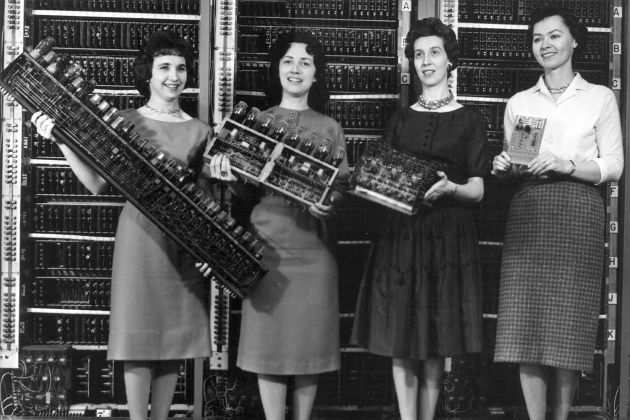

Tudo isso mostra um retrato atual da área, mas essa é uma mudança recente – na verdade, as mulheres foram as primeiras engenheiras de software.
Em 1843, Ada Lovelace foi a primeira pessoa a desenvolver um algoritmo computacional da história. Inclusive, ela inspirou um chatbot criado para comunicação interna aqui em Blip.
Hedy Lamarr era atriz e, em 1942, durante a Guerra Mundial II, patenteou um sistema de sinal com variador de frequência para evitar que torpedos controlados por rádio sejam interceptados, princípio usado hoje em tecnologias como o Bluetooth e versões anteriores de CDMA e Wi-Fi.
Em 1952, Grace Hopper foi a criadora da linguagem COBOL e, assim, popularizou a ideia de linguagem de programação orientada para o processamento de banco de dados usada até hoje.
Em 1958, Mary Kenneth Keller foi uma educadora e pioneira na área de tecnologia, além de ser a primeira mulher nos Estados Unidos a finalizar o PhD em Ciência da Computação.
Em 1969, Margaret Hamilton foi desenvolvedora e líder do time que desenvolveu os módulos lunares e de comando do sistema de voo da missão Apollo, recebendo a Medalha Presidencial da Liberdade por este feito, dada pelo então presidente americano Barack Obama.
Em 1978, Carol Shaw foi a primeira mulher a entrar no mercado de videogames, trabalhando na empresa pioneira em videogames Atari, e depois foi a responsável por criar o primeiro sistema de geração procedural de conteúdo, que nunca deixava uma fase de jogo ser igual à outra — prática que continua até hoje.
Em 2006, Frances Allen foi a primeira mulher a ganhar o prêmio Turing e foi responsável por alguns dos sistemas iniciais de segurança da National Security Agency (NSA).
Em 1960, a engenharia de software e o desenvolvimento eram considerados trabalhos femininos.
Contrastava com desenvolvimento de hardware, que era considerado trabalho masculino. Temos grandes marcos na história da presença das mulheres, como As Garotas do ENIAC (capa deste post).
ENIAC (Electronic Numerical Integrator and Computer, ou em português, Computador Integrador Numérico Eletrônico) foi o primeiro computador eletrônico da história. Ocupava um andar inteiro da Universidade da Pensilvânia e era usado para calcular trajetórias de mísseis durante a segunda Guerra Mundial.
Inicialmente, um time composto por 80 mulheres era responsável por fazer as análises e cálculos. Com a construção do ENIAC, seis mulheres foram escolhidas para dar continuidade, programando a máquina tendo apenas seus diagramas lógicos.
Como resultado, os cálculos que anteriormente levavam cerca de 30 horas começaram a ser processados em 15 segundos.
Fonte: https://www.blip.ai/blog/devs/a-volta-das-mulheres-na-computacao/#:~:text=comum%20na%20%C3%A1rea.-,Mulheres%20foram%20pioneiras%20na%20%C3%A1rea%20de%20computa%C3%A7%C3%A3o,um%20algoritmo%20computacional%20da%20hist%C3%B3ria